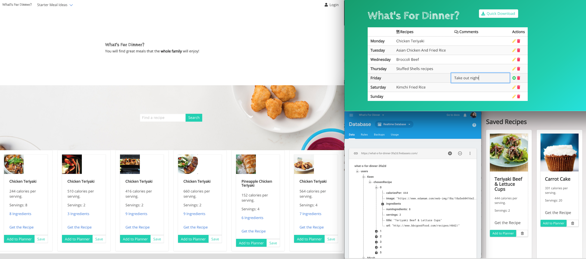
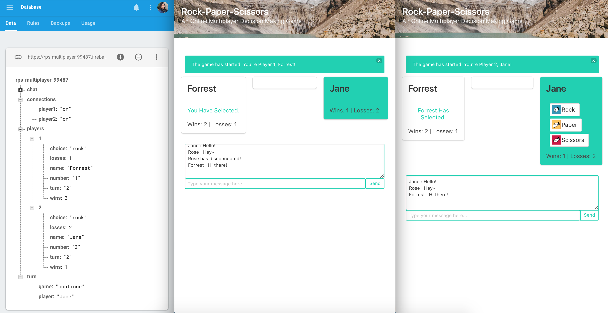
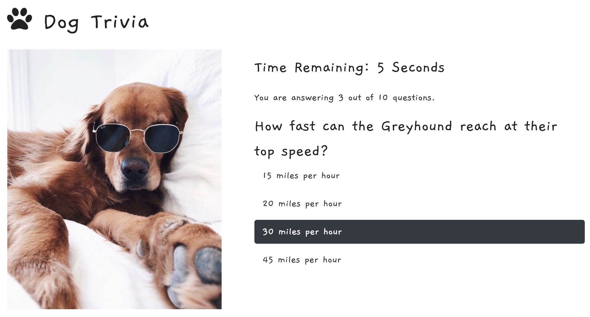
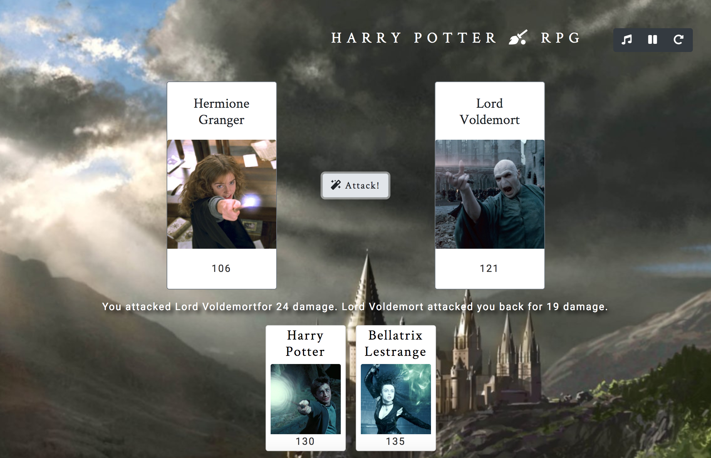

Keen Wilson
Web App Developer specializing in coding interactive websites, brand management,
and marketing. Experienced Account Manager for over eight years at a top global advertising agency. In this
role, my main task was problem-solving. Have led cross-functional teams on projects which created promotional
materials for consumer goods clients, and involved Social Media Marketing, and Search Engine Optimization
(SEO). Organized feedback mechanism to align review from agency partners and approval from multinational
client teams, resulting in efficient working process.
Holds an MBA with an emphasis on Marketing and graduated from the University of Kansas Coding Bootcamp.
Technical web dev skills consisted of HTML5, CSS, Bootstrap, JavaScript, jQuery, Node.js, React, and and
Responsive Web Design. Enjoy building user-focus web applications, solving complicated problems, and being
part of collaborative teams.
Portfolio
What's For Dinner
Implemented Bulma, Font Awesome, and "modal" like alerts to build a modern-looking website. Created JavaScript code to call the data from Edamam API for recipes search and Zotamo API for restaurants search. This web app allows the user to save recipes to their log-in on Firebase database. This group project had 120+ commits in 1.5 weeks showing that our team members have a good understanding of github. The usage of separate JavaScript files streamlined the communication between all parties.
Rock-Paper-Scissors Multiplayer
Used Bulma CSS framework to make development lifecycle faster and easier. Created an online two-player Rock-Paper-Scissors game with the help of Firebase to store and sync data between users and devices in realtime using a cloud-hosted, NoSQL database. Utilized JavaScript to build game logic and display results. This app comes with chat functionality that users can send texts and see if the opponent has disconnected.
MOVIES GIF-TASTIC

Integrated the features of GIPHY's search engine and the OMDb (open movie database) into the app by calling the data from GIPHY's API and the OMDb API. Utilized jQuery to show the user Giphy and OMDb results based on their search term and make a dynamic web page that popultes with gifs and snippets of information about the movie of their choice. Used AJAX to update data on a website without having to hit that "refresh" button in the browser. This app also allows users to add their favorite gifs to a favorites section that persists even when they select or add a new topic.
Dog Trivia Game
Using JavaScript timing events for the logic and jQuery to manipulate HTML, this dog-themed trivia game shows only one question until the player answers it or their time runs out. If the player selects the correct answer, it shows a screen congratulating them for choosing the right option. After a few seconds, it will move to the next question with no user input at all. On the final screen, this app shows the number of correct answers, incorrect answers, and an option to restart the game without reloading the page.
Harry Potter RPG
Built a fully functional browser based role playing game that involved interface design, state management, determining win paths, and fun! This app utilized JavaScript to apply the basics of iteration and keep track of winning and losing stats.
Destination Word Guess Game

A word guess game (Hangman) with a destination theme using JavaScript. This app has been created with HTML, CSS Bootstrap, and Vanilla JavaScript.
Experience
Account Manager
Simultaneously managed multiples projects for Kimberly-Clark account at J. Walter Thompson. Collaborated with 4 international and 9 local JWT team members, 6 Kimberly-Clark clients, and 10 external agency partners on a daily basis. My tasks included planning project timelines, developing consensus on responsibilities between team and clients, coordinating progress, and compiling and distributing weekly WIP reports. Successfully oversaw new regional product launch in 3 markets (Thailand, Malaysia, and Singapore), including a social media program that went viral, reaching 1 million people organically on the first day.
Summer Associate
Undertook in-depth assessments of the tourism businesses including hotels, tours, and transportation; Designed project plans for developing sustainable tourism including destination mapping, tourism services, and destination marketing.
Account Executive
Facilitated the launch of 20+ traditional and digital marketing campaigns in the CPG category for brands such as Listerine, Maybelline, and Kimberly-Clark. Synthesized actionable trends and gaps from Nielsen retail sales audit and demographics, performed competitive analysis, and developed questionnaires to measure brand health check and promotion performance.
Education
The University of Kansas
The University of North Carolina Kenan-Flagler Business School
Completed many business cases for eCommerce-related classes such as retail channel and management, digital marketing, and marketing analytics.
Skills
- HTML5/CSS
- JavaScript/jQuery
- Bootstrap, Bulma CSS Framework
- Interactivity (AJAX)
- API Consumption
- Mobile-First, Responsive Design
- Cross Browser Testing & Debugging
- Cross Functional Teams
- Agile Development & Scrum
- OOP
Interests
I enjoy seeing new part of the U.S., baking, and spending a large amount of my free time exploring the lastest web technology and staying active in my local webdev meetup.
Apart from being a web developer, I enjoy most of my time being a mom of two kids. I want to influence and inspire my kids to code at their young age because:
- Coding is logical, creative, and fun to learn.
- Coding empowers. You can change the world with your source code.
- The instant gratification of coding is real. You will always be proud of your accomplishments, big or small.
Awards & Certifications
- Social Media Marketing - Coursera Certification
- Mobile Web Specialist - Google Certification
- Beta Gamma Sigma - University of North Carolina (Top 20% of Class)
- Gold - Asia Pacific Advertising Festival (AdFest) 2010 - Promotional Campaign: Best Use of TV or Radio
- Silver - Spikes Asia 2010 - Branded Content for a Screen (A. TV / Cinema Film: Sectors / A06. Retail)